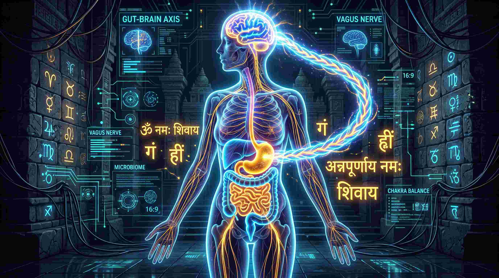
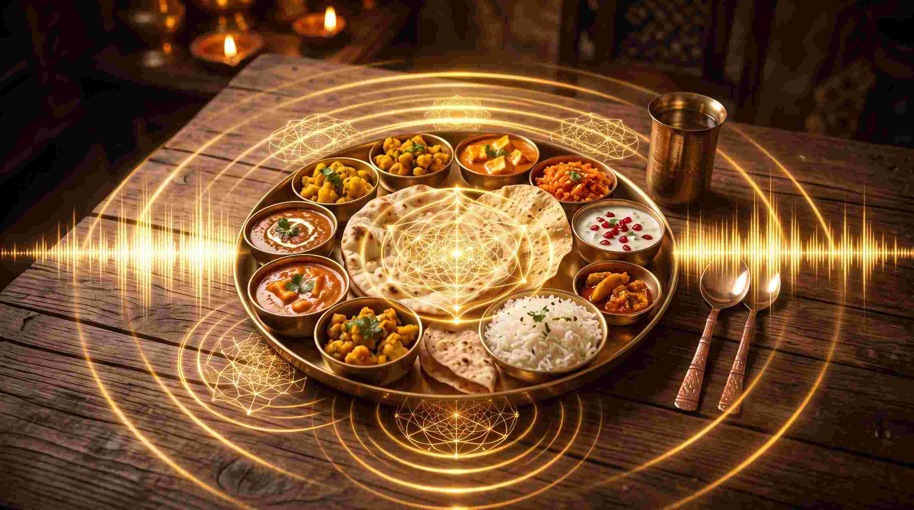

आज के आधुनिक युग में हम सबसे अच्छी डाइट (Diet), महंगे सप्लीमेंट्स (Supplements) और ऑर्गेनिक फूड खाते हैं, लेकिन फिर भी एसिडिटी (Acidity), इरिटेबल बाउल सिंड्रोम (IBS), और अवसाद (Depression) जैसी बीमारियां लगातार बढ़ रही हैं। क्या आपने कभी सोचा है कि ऐसा क्यों है? आधुनिक विज्ञान मानता है कि समस्या हमारे भोजन में नहीं, बल्कि हमारी 'मानसिक स्थिति' में है जब हम भोजन ग्रहण करते हैं।
एक मेडिकल छात्र (MBBS) होने के नाते, जब मैंने आदि शंकराचार्य द्वारा रचित अन्नपूर्णा स्तोत्र (Annapurna Stotra) का अध्ययन किया, तो मैं हैरान रह गया। [cite: 9] यह स्तोत्र केवल अन्न की देवी से खाना मांगने की प्रार्थना नहीं है; यह 'गट-ब्रेन एक्सिस' (Gut-Brain Axis) को सक्रिय करने का एक उच्च-स्तरीय न्यूरोलॉजिकल और आध्यात्मिक विज्ञान है। आइए, इस लेख में अन्नपूर्णा स्तोत्र के गहरे अर्थ और इसके वैज्ञानिक प्रभावों को समझते हैं।
"अन्नपूर्णा स्तोत्र न केवल भौतिक अन्न की प्राप्ति के लिए है बल्कि यह आध्यात्मिक ज्ञान और वैराग्य की प्राप्ति का भी साधन है।" [cite: 9]

भोजन और विज्ञान: 'गट-ब्रेन एक्सिस' (The Gut-Brain Axis)
गैस्ट्रोएंटरोलॉजी (Gastroenterology) में हमारे पेट (Gut) को 'दूसरा मस्तिष्क' (Second Brain) कहा जाता है। इसे एंटरिक नर्वस सिस्टम (Enteric Nervous System - ENS) कहते हैं। आपके शरीर का 90% सेरोटोनिन (Serotonin)—वह हार्मोन जो आपको खुशी और शांति का अहसास कराता है—आपके पेट में बनता है, न कि आपके दिमाग में!
जब आप तनाव (Stress), गुस्से या टीवी देखते हुए खाना खाते हैं, तो आपका शरीर 'फाइट या फ्लाइट' (Fight or Flight) मोड में होता है। इस अवस्था में, वेगस नर्व (Vagus Nerve) पाचन तंत्र को रक्त की आपूर्ति बंद कर देती है, जिससे खाना पेट में सड़ने लगता है। आदि शंकराचार्य इस विज्ञान को जानते थे। इसीलिए उन्होंने अन्नपूर्णा स्तोत्र की रचना की। भोजन से ठीक पहले इस स्तोत्र का गान करने से आपके स्वर-यंत्र (Vocal Cords) के कंपन से वेगस नर्व शांत होती है, और शरीर 'रेस्ट एंड डाइजेस्ट' (Rest and Digest) मोड में आ जाता है।
जल और भोजन की आणविक संरचना (Molecular Structure of Food)
जापानी वैज्ञानिक डॉ. मासारू इमोटो (Dr. Masaru Emoto) ने प्रमाणित किया है कि ध्वनि और शब्दों के कंपन (Vibrations) से पानी की आणविक संरचना (Molecular Structure) बदल जाती है। चूंकि हमारे भोजन में भी जल तत्व भारी मात्रा में होता है, इसलिए जब हम भोजन के सामने अन्नपूर्णा स्तोत्र का पाठ करते हैं, तो उस भोजन की ऊर्जा (Frequency) नकारात्मक से सकारात्मक हो जाती है, जो हमारे शरीर में जाते ही अमृत बन जाती है।

सम्पूर्ण अन्नपूर्णा स्तोत्र (मूल पाठ एवं भावार्थ)
पौराणिक कथाओं के अनुसार, आदि शंकराचार्य ने इस स्तोत्र की रचना काशी (वाराणसी) में की थी। उन्होंने देखा कि लोग केवल भौतिक अन्न के लिए ही चिंतित हैं, आध्यात्मिक ज्ञान के लिए नहीं। तब उन्होंने इस स्तोत्र के माध्यम से माँ अन्नपूर्णा से 'ज्ञान और वैराग्य' की भिक्षा माँगी। [cite: 9]
१. नित्यानन्दकरी वराभयकरी सौन्दर्यरत्नाकरी ।
निर्धूताखिलघोरपावनकरी प्रत्यक्षमहेश्वरी ।
प्रालेयाचलवंशपावनकरी काशिपुराधीश्वरी ।
भिक्षां देहि कृपावलम्बनकरी मातान्नपूर्णेश्वरी ॥
भावार्थ: हे माता अन्नपूर्णा! आप नित्य आनन्द देने वाली, वर और अभय प्रदान करने वाली हैं। आप सौन्दर्य की रत्नमाला हैं, सारे घोर पापों का नाश करने वाली हैं, स्वयं भगवान महेश्वर की प्रत्यक्ष अर्धांगिनी हैं। आप हिमालय वंश की शोभा बढ़ाने वाली, काशी की अधीश्वरी हैं। हे कृपालु माता, कृपा कर मुझे भिक्षा (ज्ञान और वैराग्य की) प्रदान कीजिए। [cite: 9]
२. नानारत्नविचित्रभूषणकरी हेमाम्बराडम्बरी ।
मुक्ताहारविलम्बमानविलसद्द्वक्षोजकुम्भान्धरी ।
काश्मीरीगरुवासितारुचिकरी काशिपुराधीश्वरी ।
भिक्षां देहि कृपावलम्बनकरी मातान्नपूर्णेश्वरी ॥
भावार्थ: आप नाना प्रकार के रत्नों से भूषित हैं, सुनहरे वस्त्र धारण करती हैं। आपके उरोजों पर मोतियों की माला झूल रही है। आपका शरीर कश्मीरी अगरु की सुगंध से सुवासित है। हे काशी की देवी, कृपा कर मुझे अपनी कृपा का सहारा दीजिए। [cite: 9]
३. योगानन्दकरी रिपुक्षयकरी धर्मार्थनिष्ठाकरी ।
चन्द्रार्कानलभासमानलहरी त्रैलोक्यरक्षाकरी ।
सर्वैश्वर्यसमस्तवाञ्छितकरी काशिपुराधीश्वरी ।
भिक्षां देहि कृपावलम्बनकरी मातान्नपूर्णेश्वरी ॥
भावार्थ: आप योगियों को आनन्द देने वाली, शत्रुओं का नाश करने वाली, धर्म और अर्थ की निष्ठा स्थापित करने वाली हैं। आपकी आभा चन्द्र, सूर्य और अग्नि के समान प्रकाशित है। आप तीनों लोकों की रक्षा करती हैं और भक्तों की सभी इच्छाएँ पूर्ण करती हैं। [cite: 9]
४. कैलेयाचलखण्डरालयकरी गौरी उमा शङ्करी ।
कौमारी निगमार्थगोचरकरी ओंकारबीजाक्षरी ।
मोक्षद्वारकवाटपट्टनकरी काशिपुराधीश्वरी ।
भिक्षां देहि कृपावलम्बनकरी मातान्नपूर्णेश्वरी ॥
भावार्थ: आप कैलास पर्वत की कंदराओं में निवास करने वाली गौरी, उमा और शङ्करी हैं। आप वेदों के गूढ़ अर्थ का अनुभव कराने वाली हैं, "ॐ" बीजाक्षर की मूर्ति हैं। आप मोक्ष के द्वार को खोलने वाली हैं। [cite: 9]
५. दृश्यादृश्यविभूतिवाहनकरी ब्रह्माण्डभण्डोद्धरी ।
लीलानाटकसूत्रकेलनकरी विज्ञानदीप्तं गुरुः ।
श्रीविश्वेशमनःप्रसादनकरी काशिपुराधीश्वरी ।
भिक्षां देहि कृपावलम्बनकरी मातान्नपूर्णेश्वरी ॥
भावार्थ: आप दृश्य और अदृश्य सम्पूर्ण भूतों की स्वामिनी हैं, सम्पूर्ण ब्रह्माण्ड की धारक हैं। आप सृष्टि के नाटक की सूत्रधार हैं, ज्ञान के दीपक समान प्रकाश देती हैं। आप भगवान विश्वेश्वर के मन को प्रसन्न करने वाली हैं। [cite: 9]
६. ऊर्वी सर्वजनेश्वरी भगवती माता कृपासागरी ।
वेणीनीलसमानकुन्तलधरी आनन्दरत्नेश्वरी ।
सर्वानन्दकरी भयानशकरी काशिपुराधीश्वरी ।
भिक्षां देहि कृपावलम्बनकरी मातान्नपूर्णेश्वरी ॥
भावार्थ: आप सम्पूर्ण पृथ्वी की अधीश्वरी भगवती हैं, कृपा के सागर समान माता हैं। आपके केश नीले मेघ के समान हैं, और आप आनन्द की रत्नेश्वरी हैं। आप सभी को आनन्द देने वाली और भय का नाश करने वाली हैं। [cite: 9]
७. आदिक्षान्तसमस्तवर्णनिकरी शब्दत्रिभावाकरी ।
काश्मीरा त्रिपुरेश्वरी त्रिलहरी नित्यामकुन्देश्वरी ।
कामाकाङ्क्षकरी जनोदयकरी काशिपुराधीश्वरी ।
भिक्षां देहि कृपावलम्बनकरी मातान्नपूर्णेश्वरी ॥
भावार्थ: आप आद्य (प्रथम) से अन्त तक सभी वर्णों की अधीश्वरी हैं, तीनों अवस्थाओं (जाग्रत, स्वप्न, सुषुप्ति) की नियामिका हैं। आप त्रिपुरसुन्दरी हैं, कश्मीरा समान सौन्दर्य से युक्त, नित्य अमरन्द की अधीश्वरी हैं। आप भक्तों की कामनाएँ पूर्ण करती हैं और उन्हें उन्नति देती हैं। [cite: 9]
८. देवी सर्वविचित्ररत्नरचितां दक्षायणी सुन्दरी ।
वामस्वादुपयोधरप्रियकरी सौभाग्यमाहेश्वरी ।
भक्ताभीष्टकरी सदा शुभकरी काशिपुराधीश्वरी ।
भिक्षां देहि कृपावलम्बनकरी मातान्नपूर्णेश्वरी ॥
भावार्थ: हे देवी! आप विविध रत्नों से अलंकृत हैं, दक्षायणी रूप में सुन्दरी हैं। आप अपने सौम्य स्तनों से शिशु शिव को प्रिय लगती हैं, आप सौभाग्य की अधिष्ठात्री हैं। आप भक्तों की इच्छाएँ पूर्ण करने वाली और सदा शुभ देने वाली हैं। [cite: 9]
९. चन्द्रकानलकोटिकोटिसदृशा चन्द्रांशुभिम्बान्धरी ।
चन्द्रकाग्निसमानकुन्तलधरी चन्द्रार्कवर्णेश्वरी ।
मालापुस्तकपाशाङ्कुशधरी काशिपुराधीश्वरी ।
भिक्षां देहि कृपावलम्बनकरी मातान्नपूर्णेश्वरी ॥
भावार्थ: आपका तेज करोड़ों चन्द्र और सूर्य के समान है। आपके केश चन्द्र और अग्नि के समान दीप्त हैं। आप हाथों में माला, पुस्तक, पाश और अंकुश धारण करती हैं। [cite: 9]
१०. क्षत्रत्राणकरी महाभयकरी माता कृपासागरी ।
साक्षान्मोक्षकरी सदा शिवकरी विश्वेश्वरी श्रीधरी ।
दक्षक्रुद्धकरी निरामयकरी काशिपुराधीश्वरी ।
भिक्षां देहि कृपावलम्बनकरी मातान्नपूर्णेश्वरी ॥
भावार्थ: आप क्षत्रियों (रक्षकों) की रक्षा करने वाली, महान भय को दूर करने वाली, कृपा के सागर रूपी माता हैं। आप साक्षात मोक्ष देने वाली, सदा मंगल करने वाली, विश्वेश्वर की अधीश्वरी हैं। आपने दक्ष के अभिमान का नाश किया और संसार को निरामय बनाया। [cite: 9]
समापन श्लोक
अन्नपूर्णे सदा पूर्णे शङ्करप्राणवल्लभे ।
ज्ञानवैराग्यसिद्ध्यर्थं भिक्षां देहि च पार्वति ॥
भावार्थ: हे अन्नपूर्णा माता! आप सदा पूर्ण और परिपूर्ण हैं, भगवान शंकर की प्राणवल्लभा हैं। मुझे ज्ञान और वैराग्य की सिद्धि के लिए भिक्षा दीजिए। [cite: 9]
माता च पार्वती देवी पिता देवो महेश्वरः ।
बान्धवाः शिवभक्ताश्च स्वदेशो भुवनत्रयम् ॥
भावार्थ: मेरी माता पार्वती हैं, पिता स्वयं भगवान महेश्वर हैं, मेरे भाई-बंधु शिवभक्त हैं और मेरा देश यह सम्पूर्ण त्रिभुवन (तीनों लोक) है। [cite: 9]
इति श्रीमच्छङ्कराचार्यविरचितं अन्नपूर्णेश्वरी भिक्षा स्तोत्रं सम्पूर्णम् ॥ [cite: 9]
अन्नपूर्णा स्तोत्र के लाभ (मेडिकल और ज्योतिषीय)
- पाचन तंत्र में सुधार: भोजन से पहले इसके पाठ से शरीर में 'पैरासिम्पेथेटिक' (Parasympathetic) नर्वस सिस्टम सक्रिय होता है, जिससे अपच और एसिडिटी जैसी समस्याएं दूर होती हैं।
- मानसिक शांति: यह स्तोत्र डिप्रेशन और एंजायटी को कम करता है क्योंकि यह सीधे आपके 'सेकंड ब्रेन' (Gut) को हील करता है। [cite: 9]
- धन और धान्य की प्रचुरता: ज्योतिषीय दृष्टिकोण से, माँ अन्नपूर्णा (पार्वती) 'चंद्रमा' (पोषण) और 'शुक्र' (समृद्धि) का प्रतिनिधित्व करती हैं। इसके नियमित पाठ से घर में कभी भौतिक अन्न और धन की कमी नहीं होती। [cite: 9]
- ज्ञान और वैराग्य: आदि शंकराचार्य ने इसमें केवल खाना नहीं माँगा है, बल्कि 'ज्ञानवैराग्यसिद्ध्यर्थं' (ज्ञान और वैराग्य) की भिक्षा मांगी है, जो मोक्ष का मार्ग प्रशस्त करता है। [cite: 9]
निष्कर्ष: ज्योतिष तर्क का दृष्टिकोण
हम अक्सर सोचते हैं कि जो हम खाते हैं, वही हम बन जाते हैं ("You are what you eat")। लेकिन वैदिक विज्ञान और आधुनिक मेडिकल साइंस दोनों यह साबित करते हैं कि "आप वह बनते हैं जो आपका शरीर पचा पाता है।"
जब आप अन्नपूर्णा स्तोत्र का गान करते हैं, तो आप केवल एक धार्मिक कर्मकांड नहीं कर रहे होते हैं; आप अपने शरीर के हार्मोनल और न्यूरोलॉजिकल सिस्टम को रीसेट (Reset) कर रहे होते हैं। अगली बार जब आप भोजन करने बैठें, तो मोबाइल फोन किनारे रखें, आंखें बंद करें, और इस स्तोत्र का पाठ करें। आपका भोजन आपके लिए 'औषधि' (Medicine) बन जाएगा!